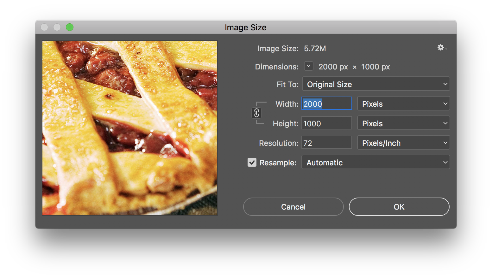
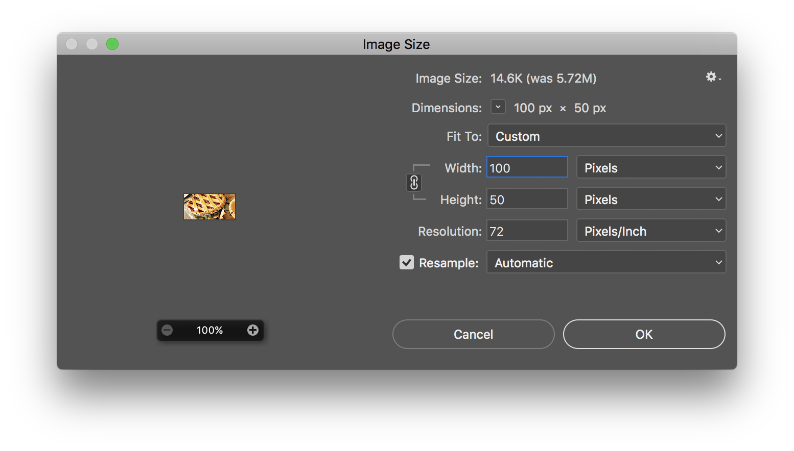

On this example, you can see on line 19 that I removed the height declaration altogether. Instead the height of the element is determined by the padding-top declaration. Since this image is exactly twice as wide as it is tall, the proportions are simple. The 50% padding for the top of this element is relative to the width. As you change the size of the window, the relative size of the header element changes with it.
It is important to note that any other content inside this header element, must then be positioned absolutely, or it will add more to the height of the element, which then throws off the proportions, leading to cropped images again.
Also, if you want to center absolutely positioned elements, margin:auto will not work. One solution is to tell the element to start at 50% from the left edge of the page, then set a negative margin equal to half the width of the element.

It is easy to tell that the correct proportion for this image 2 to 1 (width to height), but what if your image proportions are different? Do you have to resort to doing math?

Here is a cheater's approach to avoiding math... Just set the width on the image you want to use in photoshop temporarily to 100px and you will get the correct percentage in the height.
Let's take a look at something else.